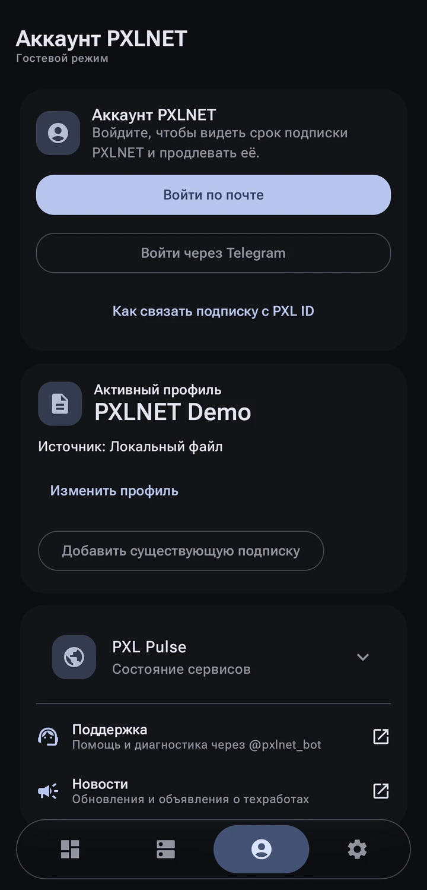
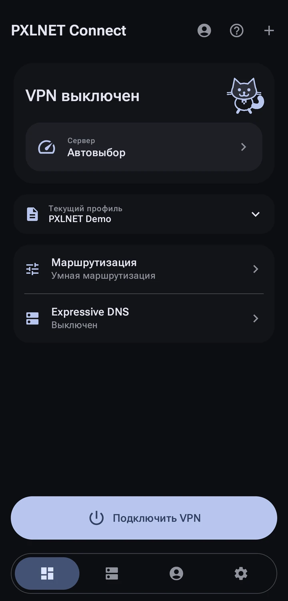
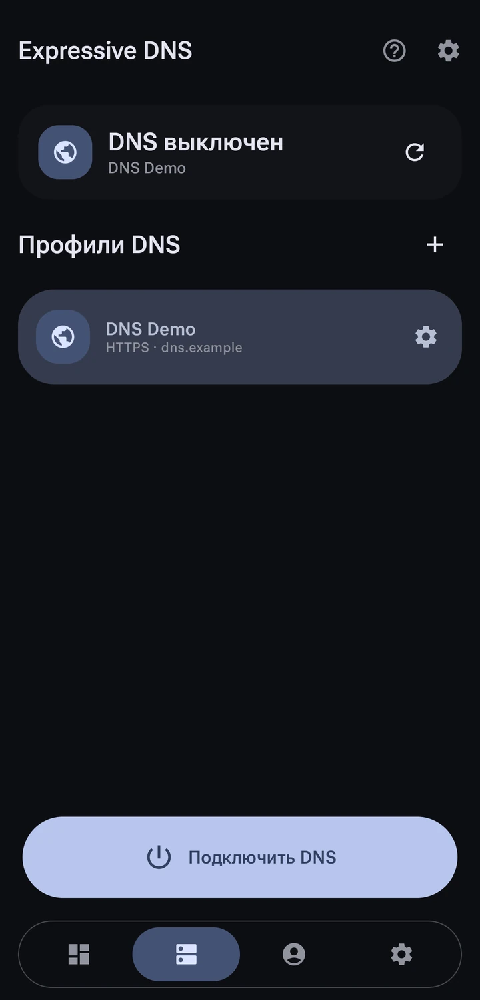

PXL ID
Вход по почте с одноразовым кодом. Можно войти через Telegram, привязать существующую подписку или импортировать её по ссылке.

VPN-клиент для Android с выбором сервера, профиля и маршрутизации.
Для Android 7.0 и новее

Войти в аккаунт, настроить DNS или выбрать, какой трафик пойдёт через VPN.
Вход по почте с одноразовым кодом. Можно войти через Telegram, привязать существующую подписку или импортировать её по ссылке.

Свои DNS-профили, правила для доменов и приложений, проверка сервера. Можно использовать отдельно или вместе с VPN.

Выберите, какой трафик проходит через VPN.
Выбирайте узел вручную или доверьте выбор режиму AUTO. PXL Guard повторно проверяет сбой и переключается на доступный сервер.
VLESS · XHTTP · Hysteria2
Выберите «Классику», «Фокус» или «Пульт» в разделе Настройки → Персонализация.
Официальные APK версии 0.7.0. Если Connect уже установлен, обновление можно проверить в приложении.
Что изменилось в 0.7.0Откройте скачанный файл и подтвердите установку в Android.
Войдите в PXL ID или вставьте ссылку на подписку или сервер.
Выберите сервер или AUTO и подтвердите создание VPN в Android.
Перед отправкой отчёта диагностики Connect удаляет из него ключи и адреса. Исходный код приложения опубликован под лицензией GPLv3.